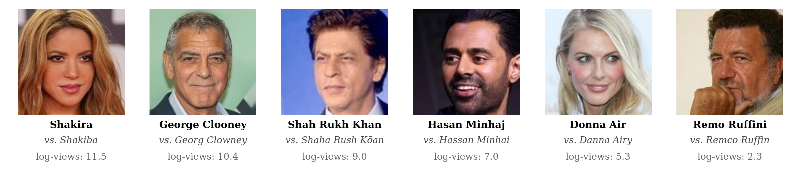

NAMESAKES
Probing Identity Memorization in Text-to-Image Models
1Carnegie Mellon University · 2University of Miami · 3Tel Aviv University · 4Cornell University
EACL 2027 (Findings)
Abstract
Text-to-image (T2I) models generate realistic likenesses of some individuals when prompted with their names, raising privacy concerns. However, distinguishing whether a generated face is memorized or fabricated currently requires ground-truth photos, access to training data, or white-box access to model internals, limiting applicability…
Method Overview
Given a T2I model and a name, we predict whether the model has memorized the associated identity or fabricates a plausible but ungrounded face, without ever accessing a ground-truth photo—using only the model's own generations. We propose two complementary black-box scores: dispersion (δ), how consistent multiple generations of the same name are with each other, and centroid similarity (scen), how similar a name's average generation is to those of other names. Memorized identities tend to produce tightly clustered, distinctive faces (low δ, low scen), while fabricated ones are more varied yet converge toward generic, demographically-driven defaults.

The NAMESAKES Dataset
NAMESAKES pairs 1,269 public figures (names, ground-truth photos, and fame estimates from Wikipedia pageviews) with perturbed names—plausible but fictitious names that orthographically resemble the original (e.g., Jodie Foster → Jolie Fuster). Names are sampled to span a full spectrum of fame, from figures likely to be memorized by T2I models to obscure ones likely to be fabricated.

Explore Examples
Browse pairs of real and perturbed names generated by SDXL-Base.
Citation
If you use NAMESAKES in your work, please cite:
@inproceedings{alper2027namesakes,
title = {NAMESAKES: Probing Identity Memorization in Text-to-Image Models},
author = {Morris Alper and Vasudha Varadarajan and Moran Yanuka and Angelina Wang and Hadar Averbuch-Elor},
booktitle = {Findings of the Association for Computational Linguistics: EACL 2027},
year = {2027}
}